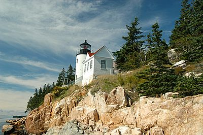
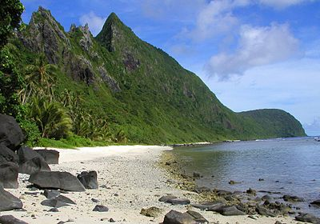
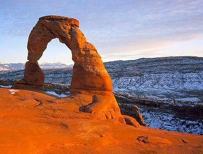
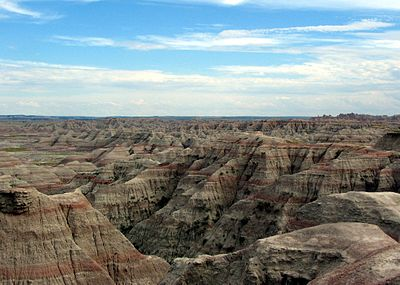
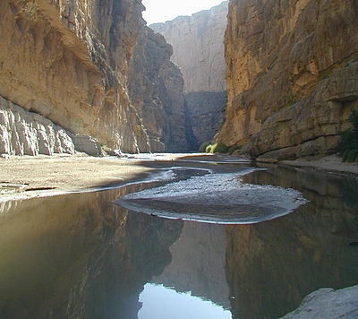
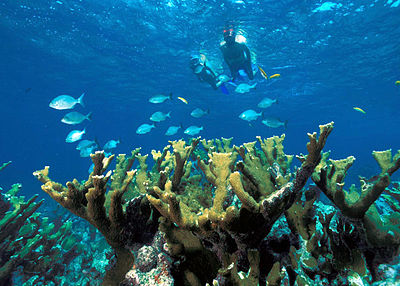
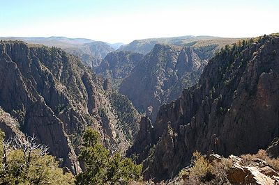

| Name | Photo | Location | Date established as park | Area[2] | Recreation visitors (2014)[5] | Description |
|---|---|---|---|---|---|---|
| Acadia |  | Maine 44°21′N 68°13′W / 44.35°N 68.21°W |
February 26, 1919 | 47,389.67 acres (191.8 km2) | 2,563,129 | Covering most of Mount Desert Island and other coastal islands, Acadia features the tallest mountain on the Atlantic coast of the United States, granite peaks, ocean shoreline, woodlands, and lakes. There are freshwater, estuary, forest, and intertidal habitats.[6][7] |
| American Samoa |  | American Samoa 14°15′S 170°41′W / 14.25°S 170.68°W |
October 31, 1988 | 9,000.00 acres (36.4 km2) | 13,953 | The southernmost national park is on three Samoan islands and protects coral reefs, rainforests, volcanic mountains, and white beaches. The area is also home to flying foxes, sea turtles, and 900 species of fish.[8] |
| Arches |  | Utah 38°41′N 109°34′W / 38.68°N 109.57°W |
November 12, 1971 | 76,518.98 acres (309.7 km2) | 1,284,767 | This site features more than 2,000 natural sandstone arches, including the famous Delicate Arch. In a desert climate, millions of years of erosion have led to these structures, and the arid ground has life-sustaining soil crust and potholes, which serve as natural water-collecting basins. Other geologic formations are stone columns, spires, fins, and towers.[9] |
| Badlands |  | South Dakota 43°45′N 102°30′W / 43.75°N 102.50°W |
November 10, 1978 | 242,755.94 acres (982.4 km2) | 868,094 | The Badlands are a collection of buttes, pinnacles, spires, and grass prairies. It has the world's richest fossil beds from the Oligocene epoch, and the wildlife includes bison, bighorn sheep, black-footed ferrets, and swift foxes.[10] |
| Big Bend |  | Texas 29°15′N 103°15′W / 29.25°N 103.25°W |
June 12, 1944 | 801,163.21 acres (3,242.2 km2) | 314,102 | Named for the prominent bend in the Rio Grande along the US–Mexico border, this park encompasses a large and remote part of the Chihuahuan Desert. Its main attraction is backcountry recreation in the arid Chisos Mountains and in canyons along the river. A wide variety of Cretaceous and Tertiary fossils as well as cultural artifacts of Native Americans also exist within its borders.[11] |
| Biscayne |  | Florida 25°39′N 80°05′W / 25.65°N 80.08°W |
June 28, 1980 | 172,924.07 acres (699.8 km2) | 525,745 | Located in Biscayne Bay, this park at the north end of the Florida Keys has four interrelated marine ecosystems: mangrove forest, the Bay, the Keys, and coral reefs. Threatened animals include the West Indian manatee, American crocodile, various sea turtles, and peregrine falcon.[12] |
| Black Canyon of the Gunnison |  | Colorado 38°34′N 107°43′W / 38.57°N 107.72°W |
October 21, 1999 | 32,950.03 acres (133.3 km2) | 183,045 | The park protects a quarter of the Gunnison River, which slices sheer canyon walls from dark Precambrian-era rock. The canyon features incredibly steep descents, and is a popular site for river rafting and rock climbing. The deep, narrow canyon, made of gneiss and schist, is often in shadow and therefore appears black.[13] |
| Bryce Canyon |  |
Utah 37°34′N 112°11′W / 37.57°N 112.18°W |
February 25, 1928 | 35,835.08 acres (145.0 km2) | 1,435,741 | Bryce Canyon is a giant geological amphitheater on the Paunsaugunt Plateau. The unique area has hundreds of tall sandstone hoodoos formed by erosion. The region was originally settled by Native Americans and later by Mormon pioneers.[14] |
| Canyonlands |  |
Utah 38°12′N 109°56′W / 38.2°N 109.93°W |
September 12, 1964 | 337,597.83 acres (1,366.2 km2) | 542,431 | This landscape was eroded into a maze of canyons, buttes, and mesas by the combined efforts of the Colorado River, Green River, and their tributaries, which divide the park into three districts. There are rock pinnacles and other naturally sculpted rock formations, as well as artifacts from Ancient Pueblo peoples.[15] |
| Capitol Reef |  |
Utah 38°12′N 111°10′W / 38.20°N 111.17°W |
December 18, 1971 | 241,904.26 acres (979.0 km2) | 786,514 | The park's Waterpocket Fold is a 100-mile (160 km) monocline that exhibits the earth's diverse geologic layers. Other natural features are monoliths, sandstone domes, and cliffs shaped like the United States Capitol.[16] |
| Carlsbad Caverns |  |
New Mexico 32°10′N 104°26′W / 32.17°N 104.44°W |
May 14, 1930 | 46,766.45 acres (189.3 km2) | 1,497,889 | Carlsbad Caverns has 117 caves, the longest of which is over 120 miles (190 km) long. The Big Room is almost 4,000 feet (1,200 m) long, and the caves are home to over 400,000 Mexican free-tailed bats and sixteen other species. Above ground are the Chihuahuan Desert and Rattlesnake Springs.[17] (WHS) |
| Channel Islands |  |
California 34°01′N 119°25′W / 34.01°N 119.42°W |
March 5, 1980 | 249,561.00 acres (1,009.9 km2) | 342,161 | Five of the eight Channel Islands are protected, and half of the park's area is underwater. The islands have a unique Mediterranean ecosystem originally settled by the Chumash people. They are home to over 2,000 species of land plants and animals, and 145 are unique to them, including the island fox. Professional ferry services offer transportation to the islands from the mainland.[18] |
| Congaree |  |
South Carolina 33°47′N 80°47′W / 33.78°N 80.78°W |
November 10, 2003 | 26,545.86 acres (107.4 km2) | 120,122 | On the Congaree River, this park is the largest portion of old-growth floodplain forest left in North America. Some of the trees are the tallest in the Eastern US. An elevated walkway called the Boardwalk Loop guides visitors through the swamp.[19] |
| Crater Lake |  |
Oregon 42°56′N 122°06′W / 42.94°N 122.1°W |
May 22, 1902 | 183,224.05 acres (741.5 km2) | 535,508 | Crater Lake lies in the caldera of an ancient volcano called Mount Mazama that collapsed 7,700 years ago. It is the deepest lake in the United States and is famous for its vivid blue color and water clarity. There are two more recent volcanic islands in the lake, and, with no inlets or outlets, all water comes through precipitation.[20] |
| Cuyahoga Valley |  |
Ohio 41°14′N 81°33′W / 41.24°N 81.55°W |
October 11, 2000 | 32,950 acres (133.3 km2)[21] | 2,189,849 | This park along the Cuyahoga River has waterfalls, hills, trails, and exhibits on early rural living. The Ohio and Erie Canal Towpath Trail follows the Ohio and Erie Canal, where mules towed canal boats. The park has numerous historic homes, bridges, and structures,[22] and also offers a scenic train ride.[23] |
| Death Valley |  |
California, Nevada 36°14′N 116°49′W / 36.24°N 116.82°W |
October 31, 1994 | 3,372,401.96 acres (13,647.6 km2) | 1,101,312 | Death Valley is the hottest, lowest, and driest place in the United States. Daytime temperatures have topped 130 °F (54 °C) and it is home to Badwater Basin, the lowest elevation in North America. A diversity of colorful canyons, desolate badlands, shifting sand dunes, sprawling mountains, and over 1000 species of plants populate this geologic graben. Additional points of interest include salt flats, historic mines, and springs.[24] |
| Denali |  |
Alaska 63°20′N 150°30′W / 63.33°N 150.50°W |
February 26, 1917 | 4,740,911.72 acres (19,185.8 km2) | 531,315 | Centered on Denali, the tallest mountain in North America, Denali is serviced by a single road leading to Wonder Lake. Denali and other peaks of the Alaska Range are covered with long glaciers and boreal forest. Wildlife includes grizzly bears, Dall sheep, caribou, and gray wolves.[25] |
| Dry Tortugas |  |
Florida 24°38′N 82°52′W / 24.63°N 82.87°W |
October 26, 1992 | 64,701.22 acres (261.8 km2) | 64,865 | The islands of the Dry Tortugas, at the westernmost end of the Florida Keys, are the site of Fort Jefferson, a Civil War-era fort that is the largest masonry structure in the Western Hemisphere. With most of the park being remote ocean, it is home to undisturbed coral reefs and shipwrecks and is only accessible by plane or boat.[26] |
| Everglades |  |
Florida 25°19′N 80°56′W / 25.32°N 80.93°W |
May 30, 1934 | 1,508,537.90 acres (6,104.8 km2) | 1,110,901 | The Everglades are the largest tropical wilderness in the United States. This mangrove and tropical rainforest ecosystem and marine estuary is home to 36 protected species, including the Florida panther, American crocodile, and West Indian manatee. Some areas have been drained and developed; restoration projects aim to restore the ecology.[27] (WHS) |
| Gates of the Arctic |  |
Alaska 67°47′N 153°18′W / 67.78°N 153.30°W |
December 2, 1980 | 7,523,897.74 acres (30,448.1 km2) | 12,669 | The country's northernmost park protects an expanse of pure wilderness in Alaska's Brooks Range and has no park facilities. The land is home to Alaska natives, who have relied on the land and caribou for 11,000 years.[28] |
| Glacier |  |
Montana 48°48′N 114°00′W / 48.80°N 114.00°W |
May 11, 1910 | 1,013,572.41 acres (4,101.8 km2) | 2,338,528 | The U.S. half of Waterton-Glacier International Peace Park, this park hosts 26 glaciers and 130 named lakes beneath a stunning canopy of Rocky Mountain peaks. There are historic hotels and a landmark road in this region of rapidly receding glaciers. The local mountains, formed by an overthrust, expose the world's best-preserved sedimentary fossils from the Proterozoic era.[29] (WHS) |
| Glacier Bay |  |
Alaska 58°30′N 137°00′W / 58.50°N 137.00°W |
December 2, 1980 | 3,224,840.31 acres (13,050.5 km2) | 500,727 | Glacier Bay has numerous tidewater glaciers, mountains, fjords, and a temperate rainforest, and is home to large populations of grizzly bears, mountain goats, whales, seals, and eagles. When discovered in 1794 by George Vancouver, the entire bay was covered in ice, but the glaciers have since receded more than 65 miles (105 km).[30] (WHS) |
| Grand Canyon |  |
Arizona 36°04′N 112°08′W / 36.06°N 112.14°W |
February 26, 1919 | 1,217,403.32 acres (4,926.7 km2) | 4,756,771 | The Grand Canyon, carved by the mighty Colorado River, is 277 miles (446 km) long, up to 1 mile (1.6 km) deep, and up to 15 miles (24 km) wide. Millions of years of erosion have exposed the colorful layers of the Colorado Plateau in countless mesas and canyon walls, visible from both the north and south rims, or from a number of trails that descend into the canyon itself.[31] (WHS) |
| Grand Teton |  |
Wyoming 43°44′N 110°48′W / 43.73°N 110.80°W |
February 26, 1929 | 309,994.66 acres (1,254.5 km2) | 2,791,392 | Grand Teton is the tallest mountain in the Teton Range. The park's historic Jackson Hole and reflective piedmont lakes teem with unique wildlife and contrast with the dramatic mountains, which rise abruptly from the sage-covered valley below.[32] |
| Great Basin |  |
Nevada 38°59′N 114°18′W / 38.98°N 114.30°W |
October 27, 1986 | 77,180.00 acres (312.3 km2) | 107,526 | Based around Nevada's second tallest mountain, Wheeler Peak, Great Basin National Park contains 5,000-year-old bristlecone pines, a rock glacier, and the limestone Lehman Caves. It also enjoys some of the country's darkest night skies. Animals which call the park home include Townsend's big-eared bat, pronghorn, and Bonneville cutthroat trout.[33] |
| Great Sand Dunes |  |
Colorado 37°44′N 105°31′W / 37.73°N 105.51°W |
September 13, 2004 | 42,983.74 acres (173.9 km2) | 271,774 | The tallest sand dunes in North America, up to 750 feet (230 m) tall, were formed by deposits of the ancient Rio Grande in the San Luis Valley. Abutting a variety of grasslands, shrublands, and wetlands, the park also has alpine lakes, six 13,000-foot mountains, and old-growth forests.[34] |
| Great Smoky Mountains |  |
Tennessee, North Carolina 35°41′N 83°32′W / 35.68°N 83.53°W |
June 15, 1934 | 521,490.13 acres (2,110.4 km2) | 10,099,276 | The Great Smoky Mountains, part of the Appalachian Mountains, span a wide range of elevations, making them home to over 400 vertebrate species, 100 tree species, and 5000 plant species. Hiking is the park's main attraction, with over 800 miles (1,300 km) of trails, including 70 miles (110 km) of the Appalachian Trail. Other activities include fishing, horseback riding, and touring nearly 80 historic structures.[35] (WHS) |
| Guadalupe Mountains |  |
Texas 31°55′N 104°52′W / 31.92°N 104.87°W |
October 15, 1966 | 86,415.97 acres (349.7 km2) | 166,868 | This park boasts Guadalupe Peak, the highest point in Texas; the scenic McKittrick Canyon filled with bigtooth maples; a corner of the arid Chihuahuan Desert; and a fossilized coral reef from the Permian era.[36] |
| Haleakalā |  |
Hawaii 20°43′N 156°10′W / 20.72°N 156.17°W |
August 1, 1916 | 29,093.67 acres (117.7 km2) | 1,142,040 | The Haleakalā volcano on Maui features a very large crater with numerous cinder cones, Hosmer's Grove of alien trees, the Kipahulu section's scenic pools of freshwater fish, and the native Hawaiian goose. It is home to the greatest number of endangered species within a U.S. National Park.[37] |
| Hawaii Volcanoes |  |
Hawaii 19°23′N 155°12′W / 19.38°N 155.20°W |
August 1, 1916 | 323,431.38 acres (1,308.9 km2) | 1,693,005 | This park on the Big Island protects the famous Kīlauea and Mauna Loa volcanoes, two of the world's most active geological features. Diverse ecosystems range from tropical forests at sea level to barren lava beds at more than 13,000 feet (4,000 m).[38] (WHS) |
| Hot Springs |  |
Arkansas 34°31′N 93°03′W / 34.51°N 93.05°W |
March 4, 1921 | 5,549.75 acres (22.5 km2) | 1,424,484 | Hot Springs was established by act of Congress as a federal reserve on April 20, 1832, as such it is the oldest park managed by the National Park Service. Congress changed the reserve's designation to National Park on March 4, 1921 after the National Park Service was established in 1916. Hot Springs is the smallest and only National Park in an urban area and is based around natural hot springs that flow out of the low lying Ouachita Mountains. The springs provide opportunities for relaxation in an historic setting; Bathhouse Row preserves numerous examples of 19th-century architecture.[39] |
| Isle Royale |  |
Michigan 48°06′N 88°33′W / 48.10°N 88.55°W |
April 3, 1940 | 571,790.11 acres (2,314.0 km2) | 14,560 | The largest island in Lake Superior is a place of isolation and wilderness. Along with its many shipwrecks, waterways, and hiking trails, the park also includes over 400 smaller islands within 4.5 miles (7.2 km) of its shores. There are only 20 mammal species on the entire island, though the relationship between its wolf and moose populations is especially unique.[40] |
| Joshua Tree |  |
California 33°47′N 115°54′W / 33.79°N 115.90°W |
October 31, 1994 | 789,745.47 acres (3,196.0 km2) | 1,589,904 | Covering large areas of the Colorado and Mojave Deserts and the Little San Bernardino Mountains, this exotic desert landscape is populated by vast stands of the famous Joshua tree. Great changes in elevation reveal starkly contrasting environments including bleached sand dunes, dry lakes, rugged mountains, and maze-like clusters of monzogranite monoliths.[41] |
| Katmai |  |
Alaska 58°30′N 155°00′W / 58.50°N 155.00°W |
December 2, 1980 | 3,674,529.68 acres (14,870.3 km2) | 30,896 | This park on the Alaska Peninsula protects the Valley of Ten Thousand Smokes, an ash flow formed by the 1912 eruption of Novarupta, as well as Mount Katmai. Over 2,000 grizzly bears come here each year to catch spawning salmon. Other wildlife includes caribou, wolves, moose, and wolverines.[42] |
| Kenai Fjords |  |
Alaska 59°55′N 149°39′W / 59.92°N 149.65°W |
December 2, 1980 | 669,982.99 acres (2,711.3 km2) | 270,666 | Near Seward on the Kenai Peninsula, this park protects the Harding Icefield and at least 38 glaciers and fjords stemming from it. The only area accessible to the public by road is Exit Glacier; the rest must be viewed or reached from boat tours.[43] |
| Kings Canyon |  |
California 36°48′N 118°33′W / 36.80°N 118.55°W |
March 4, 1940 | 461,901.20 acres (1,869.2 km2) | 502,268 | Home to several giant sequoia groves and the General Grant Tree, the world's second largest, this park also features part of the Kings River, sculptor of the dramatic granite canyon that is its namesake, and the San Joaquin River, as well as Boyden Cave.[44] |
| Kobuk Valley |  |
Alaska 67°33′N 159°17′W / 67.55°N 159.28°W |
December 2, 1980 | 1,750,716.50 acres (7,084.9 km2) | 16,875 | Kobuk Valley protects 61 miles (98 km) of the Kobuk River and three regions of sand dunes. Created by glaciers, the Great Kobuk, Little Kobuk, and Hunt River Sand Dunes can reach 100 feet (30 m) high and 100 °F (38 °C), and they are the largest dunes in the Arctic. Twice a year, half a million caribou migrate through the dunes and across river bluffs that expose well-preserved ice age fossils.[45] |
| Lake Clark |  |
Alaska 60°58′N 153°25′W / 60.97°N 153.42°W |
December 2, 1980 | 2,619,733.21 acres (10,601.7 km2) | 16,100 | The region around Lake Clark features four active volcanoes, including Mount Redoubt, as well as an abundance of rivers, glaciers, and waterfalls. Temperate rainforests, a tundra plateau, and three mountain ranges fill in the remaining landscape.[46] |
| Lassen Volcanic |  |
California 40°29′N 121°31′W / 40.49°N 121.51°W |
August 9, 1916 | 106,372.36 acres (430.5 km2) | 432,977 | Lassen Peak, the largest plug dome volcano in the world, is joined by all three other types of volcanoes in this park: shield, cinder dome, and composite. Though Lassen itself last erupted in 1915, most of the rest of the park is continuously active: numerous hydrothermal features, including fumaroles, boiling pools, and bubbling mud pots, are heated by molten rock from beneath the peak.[47] |
| Mammoth Cave |  |
Kentucky 37°11′N 86°06′W / 37.18°N 86.10°W |
July 1, 1941 | 52,830.19 acres (213.8 km2) | 522,628 | With more than 400 miles (640 km) of passageways explored, Mammoth Cave is by far the world's longest cave system. Subterranean wildlife includes eight bat species, Kentucky cave shrimp, Northern cavefish, and cave salamanders. Above ground, the park provides recreation on the Green River, 70 miles of hiking trails, and plenty of sinkholes and springs.[48] (WHS) |
| Mesa Verde |  |
Colorado 37°11′N 108°29′W / 37.18°N 108.49°W |
June 29, 1906 | 52,121.93 acres (210.9 km2) | 501,563 | This area constitutes over 4,000 archaeological sites of the Ancestral Puebloan people, who lived here and elsewhere in the Four Corners region for at least 700 years. Cliff dwellings built in the 12th and 13th centuries include the famous Cliff Palace, which has 150 rooms and 23 kivas, and the Balcony House, with its many passages and tunnels.[49] (WHS) |
| Mount Rainier |  |
Washington 46°51′N 121°45′W / 46.85°N 121.75°W |
March 2, 1899 | 235,625.00 acres (953.5 km2) | 1,264,259 | Mount Rainier, an active stratovolcano, is the most prominent peak in the Cascades, and is covered by 26 named glaciers including Carbon Glacier and Emmons Glacier, the largest in the contiguous United States. The mountain is popular for climbing, and more than half of the park is covered by subalpine and alpine forests and meadows seasonally in bloom with wildflowers. Paradise on the south slope is one of the snowiest places in the world, and the Longmire visitor center is the start of the Wonderland Trail, which encircles the mountain.[50] |
| North Cascades |  |
Washington 48°42′N 121°12′W / 48.70°N 121.20°W |
October 2, 1968 | 504,780.94 acres (2,042.8 km2) | 23,865 | This complex encompasses two units of the national park itself as well as the Ross Lake and Lake Chelan National Recreation Areas. The highly glaciated mountains are spectacular examples of Cascade geology; popular hiking and climbing areas include Cascade Pass, Mount Shuksan, Mount Triumph, and Eldorado Peak.[51] |
| Olympic |  |
Washington 47°58′N 123°30′W / 47.97°N 123.50°W |
June 29, 1938 | 922,650.86 acres (3,733.8 km2) | 3,243,872 | Situated on the Olympic Peninsula, this park straddles a diversity of ecosystems from Pacific shoreline to temperate rainforests to the alpine slopes of Mount Olympus. The scenic Olympic Mountains overlook the Hoh Rain Forest and Quinault Rain Forest, the wettest area in the continental United States.[52] (WHS) |
| Petrified Forest |  |
Arizona 35°04′N 109°47′W / 35.07°N 109.78°W |
December 9, 1962 | 93,532.57 acres (378.5 km2) | 836,799 | This portion of the Chinle Formation has a great concentration of 225-million-year-old petrified wood. The surrounding Painted Desert features eroded cliffs of wonderfully red-hued volcanic rock called bentonite. There are also dinosaur fossils and over 350 Native American sites.[53] |
| Pinnacles |  |
California 36°29′N 121°10′W / 36.48°N 121.16°W |
January 10, 2013 | 26,605.73 acres (107.7 km2) | 196,635 | Named for the eroded leftovers of a portion of an extinct volcano, the park is famous for its massive black and gold monoliths of andesite and rhyolite, which are popular with rock climbers, and a hiker's paradise of quiet trails crossing scenic Coast Range wilderness. The park is home to the endangered California condor (Gymnogyps californianus) and one of the few locations in the world where these extremely rare birds can be seen in the wild. Pinnacles also supports a dense population of prairie falcons, and more than 13 species of bat which populate its talus caves.[54] |
| Redwood |  |
California 41°18′N 124°00′W / 41.30°N 124.00°W |
October 2, 1968 | 112,512.05 acres (455.3 km2) | 429,166 | This park and the co-managed state parks protect almost half of all remaining coastal redwoods, the tallest trees on earth. There are three large river systems in this very seismically active area, and 37 miles (60 km) of protected coastline reveal tide pools and seastacks. The prairie, estuary, coast, river, and forest ecosystems contain a huge variety of animal and plant species.[55] (WHS) |
| Rocky Mountain |  |
Colorado 40°24′N 105°35′W / 40.40°N 105.58°W |
January 26, 1915 | 265,828.41 acres (1,075.8 km2) | 3,434,751 | Bisected north to south by the Continental Divide, this portion of the Rockies has ecosystems varying from over 150 riparian lakes to montane and subalpine forests to treeless alpine tundra. Wildlife including mule deer, bighorn sheep, black bears, and cougars inhabit its igneous mountains and glacier valleys. Longs Peak, a classic Colorado fourteener, and the scenic Bear Lake are popular destinations, as well as the famous Trail Ridge Road, which reaches an elevation of more than 12,000 feet (3,700 m).[56] |
| Saguaro |  |
Arizona 32°15′N 110°30′W / 32.25°N 110.50°W |
October 14, 1994 | 91,439.71 acres (370.0 km2) | 673,572 | Split into the separate Rincon Mountain and Tucson Mountain districts, this park is evidence that the dry Sonoran Desert is still home to a great variety of life spanning six biotic communities. Beyond the namesake giant saguaro cacti, there are barrel cacti, chollas, and prickly pears, as well as lesser long-nosed bats, spotted owls, and javelinas.[57] |
| Sequoia |  |
California 36°26′N 118°41′W / 36.43°N 118.68°W |
September 25, 1890 | 404,051.17 acres (1,635.1 km2) | 1,039,137 | This park protects the Giant Forest, which boasts some of the world's largest trees, the General Sherman being the largest in the park. It also has over 240 caves, a scenic segment of the Sierra Nevada including the tallest mountain in the contiguous United States, and Moro Rock, a photogenic granite dome.[58] |
| Shenandoah |  |
Virginia 38°32′N 78°21′W / 38.53°N 78.35°W |
May 22, 1926 | 199,045.23 acres (805.5 km2) | 1,255,321 | Shenandoah's Blue Ridge Mountains are covered by sprawling hardwood forests that teem with tens of thousands of animals. The Skyline Drive and Appalachian Trail run the entire length of this narrow park, along with more than 500 miles (800 km) of hiking trails passing scenic overlooks and cataracts of the Shenandoah River.[59] |
| Theodore Roosevelt |  |
North Dakota 46°58′N 103°27′W / 46.97°N 103.45°W |
November 10, 1978 | 70,446.89 acres (285.1 km2) | 559,580 | This region that enticed and influenced President Theodore Roosevelt consists of a park of three units in the northern badlands. Besides Roosevelt's historic cabin, there are numerous scenic drives and backcountry hiking opportunities. Wildlife includes American bison, pronghorn, bighorn sheep, and wild horses.[60] |
| Virgin Islands |  |
United States Virgin Islands 18°20′N 64°44′W / 18.33°N 64.73°W |
August 2, 1956 | 14,688.87 acres (59.4 km2) | 426,930 | The island of Saint John has rich human and natural histories. Taíno archaeological sites and ruins of sugar plantations from Columbus' time litter the coast. Past the pristine beaches are mangrove forests, seagrass beds, coral reefs, and vast algal plains.[61] |
| Voyageurs |  |
Minnesota 48°30′N 92°53′W / 48.50°N 92.88°W |
January 8, 1971 | 218,200.17 acres (883.0 km2) | 239,160 | This park protecting four lakes near the Canada–US border is a site for canoeing, kayaking, and fishing, and preserves a history populated by Ojibwe Native Americans, French fur traders called voyageurs, and ambitious gold-miners. Formed by glaciers, the region features tall bluffs, rock gardens, scenic islands and bays, and several historic buildings.[62] |
| Wind Cave |  |
South Dakota 43°34′N 103°29′W / 43.57°N 103.48°W |
January 9, 1903 | 28,295.03 acres (114.5 km2) | 542,022 | Wind Cave is distinctive for its calcite fin formations called boxwork and needle-like growths called frostwork. Additionally, it is the world's densest and most complex cave system. Above ground is a mixed-grass prairie with animals such as bison, black-footed ferrets, and prairie dogs.[63] and ponderosa pine forests home to cougars and elk. It is culturally significant to the Lakota people as the site in which their emergence story takes place. |
| Wrangell–St. Elias |  |
Alaska 61°00′N 142°00′W / 61.00°N 142.00°W |
December 2, 1980 | 8,323,147.59 acres (33,682.6 km2) | 74,722 | An immense plot of mountainous country protects the convergence of the Alaska, Chugach, and Wrangell-Saint Elias Ranges, which include many of the continent's tallest mountains and volcanoes, including the 18,008-foot Mount Saint Elias. More than a quarter of the park is covered with glaciers, including the tidewater Hubbard Glacier, piedmont Malaspina Glacier, and valley Nabesna Glacier.[64] (WHS) |
| Yellowstone |  |
Wyoming, Montana, Idaho 44°36′N 110°30′W / 44.60°N 110.50°W |
March 1, 1872 | 2,219,790.71 acres (8,983.2 km2) | 3,513,484 | Situated on the Yellowstone Caldera, the park has an expansive network of geothermal areas including vividly colored hot springs, boiling mud pots, and regularly erupting geysers, the best-known being Old Faithful and Grand Prismatic Spring. The yellow-hued Grand Canyon of the Yellowstone River has a number of scenic waterfalls, and four mountain ranges run through the park. More than 60 mammal species including gray wolves, grizzly bears, lynxes, bison, and elk, make this park one of the best wildlife viewing spots in the country.[65] (WHS) |
| Yosemite |  |
California 37°50′N 119°30′W / 37.83°N 119.50°W |
October 1, 1890 | 761,266.19 acres (3,080.7 km2) | 3,882,642 | Yosemite features towering granite cliffs, dramatic waterfalls, and old-growth forests at a unique intersection of geology and hydrology. Half Dome and El Capitan rise from the park's centerpiece, the glacier-carved Yosemite Valley, and from its vertical walls drop Yosemite Falls, North America's tallest waterfall. Three giant sequoia groves, along with a pristine wilderness in the heart of the Sierra Nevada, are home to an abundance of rare plant and animal species.[66] (WHS) |
| Zion |  |
Utah 37°18′N 113°03′W / 37.30°N 113.05°W |
November 19, 1919 | 146,597.60 acres (593.3 km2) | 3,189,696 | Located at the junction of the Colorado Plateau, Great Basin, and Mojave Desert, this geological wonder has colorful sandstone canyons, mountainous mesas, and countless rock towers. Natural arches and exposed plateau formations compose a large wilderness roughly divided into four ecosystems: desert, riparian, woodland, and coniferous forest.[67] |

{kind=link}
{kind=link}
{kind=link}
{kind=link}
{kind=link}
{kind=link}
{kind=link}